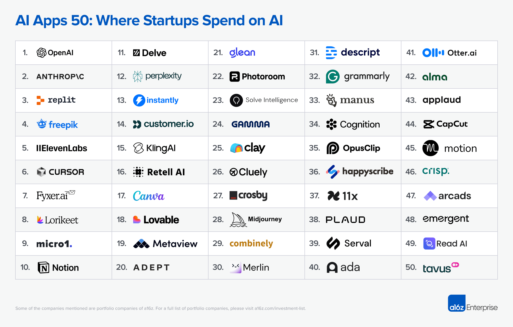

Which AI apps do businesses actually subscribe to for a positive ROI? A new report from Andreessen Horowitz reveals the top 50 AI apps by subscription revenue. That's incredibly useful for determining which apps to consider for yourself. What not useful is that static image they used to present the list. So I published the table below with categories, descriptions and links.
A few key takeaways:
| Rank | App Name | Category | Description |
|---|---|---|---|
| 1 | OpenAI | Foundational Model | The company behind ChatGPT - your AI assistant for writing, research, and problem-solving. Also powers many other AI apps through its API. Now includes apps inside ChatGPT and personalized daily briefings. |
| 2 | Anthropic | Foundational Model | Creator of Claude, an AI assistant that helps with writing, analysis, and coding. Known for safety-focused AI that can now create and edit Excel files, PowerPoint presentations, and documents. Features team memory to remember your projects. |
| 3 | Replit | Engineering Stack | A coding platform where you can build websites and apps right in your browser. Perfect for learning to code or creating projects without installing anything. Over 30 million users, with more than half being non-programmers. |
| 4 | Freepik | Generative Content | A massive library of stock images, graphics, and templates, now with AI tools to generate custom images, remove backgrounds, and turn sketches into designs. One subscription for everything creative. |
| 5 | ElevenLabs | Generative Content | Creates incredibly realistic AI voices for videos, audiobooks, and podcasts. Can clone your voice or generate brand new ones. Recently launched AI music generation too. |
| 6 | Cursor | Engineering Stack | A code editor that acts like having an expert programmer sitting next to you. It understands your entire project and can write, fix, and explain code in plain English. Built on Visual Studio Code with deep AI integration. |
| 7 | Fyxer.ai | Productivity & Automation | Your AI executive assistant that manages emails, schedules meetings, and keeps you organized across Gmail, Outlook, Slack, and Zoom. Grew incredibly fast by making work communications simpler. |
| 8 | Lorikeet | Customer Experience | AI customer support that handles complex questions for banks and healthcare companies. Follows your company's procedures exactly, so it can solve real problems, not just answer simple FAQs. |
| 9 | micro1 | HR & Recruitment | Finds and vets job candidates using AI. Specializes in matching companies with highly skilled professionals and experts, especially for AI and tech roles. Grew from $7M to $50M in revenue in just 9 months. |
| 10 | Notion | Productivity & Automation | An all-in-one workspace for notes, documents, wikis, and project management. The AI assistant helps you write, brainstorm, and summarize - working directly with all your content in one place. |
| 11 | Delve | IT & Operations | Makes getting security certifications (SOC2, HIPAA, ISO 27001) fast and painless. AI handles the paperwork and compliance busywork that normally takes months, getting it done in days. |
| 12 | Perplexity | Search & Knowledge | A smarter search engine that gives you direct answers with sources, instead of just links. Launched its own browser in 2025 to bring AI-powered answers to all your web browsing. |
| 13 | Instantly | Sales & GTM | Sends cold emails at scale with unlimited email accounts in one subscription. Built-in database of business contacts and tools to keep your emails landing in inboxes, not spam folders. |
| 14 | Customer.io | Sales & GTM | Sends personalized messages to your customers across email, text, push notifications, and in-app messages. Automatically triggers the right message based on what customers do. |
| 15 | Kling AI | Generative Content | Creates realistic AI videos up to 3 minutes long from text or images. Made by a Chinese company, it's becoming one of the best tools for bringing still images to life with smooth motion. |
| 16 | Retell AI | Customer Experience | Powers AI phone conversations that sound natural. Businesses can plug it into their existing phone systems to automate customer service calls without starting from scratch. |
| 17 | Canva | Generative Content | The popular design tool used by 175 million people monthly. Makes it easy for anyone to create professional graphics, presentations, and videos. AI features help you generate designs, edit images, and create content faster. |
| 18 | Lovable | Engineering Stack | Builds complete working websites and web apps from your descriptions. Type what you want, and it creates the code for React apps with databases. Great for quickly prototyping ideas. |
| 19 | Metaview | HR & Recruitment | Takes notes during job interviews and automatically fills out your hiring system with structured feedback. Built specifically for recruiters, not just generic meeting transcription. |
| 20 | ADEPT | Foundational Model / Agent | Pioneering AI that can actually use your computer like a human - clicking, typing, and navigating through any software. Acquired by Amazon in 2024 for its breakthrough approach to automation. |
| 21 | Glean | Search & Knowledge | Search across all your company's apps at once - Google Drive, Slack, email, Notion, everything. Built by ex-Google search engineers to solve the problem of information scattered everywhere. |
| 22 | Photoroom | Generative Content | One-tap photo editing for product photos. Remove backgrounds, add AI-generated backgrounds, and batch edit hundreds of images. Used by 300+ million people, especially e-commerce sellers. |
| 23 | Solve Intelligence | Legal Tech | Helps patent attorneys draft and file patents 60-90% faster using AI. Works alongside lawyers throughout the entire patent process with specialized knowledge of different countries' requirements. |
| 24 | Gamma | Productivity & Automation | Creates beautiful presentations and documents from just a few prompts. Makes modern, scrollable web-based presentations instead of traditional slide decks. |
| 25 | Clay | Sales & GTM | Finds and enriches data about potential customers from dozens of sources. Automates research and creates personalized outreach messages. Think of it as a supercharged spreadsheet for sales teams. |
| 26 | Cluely | Productivity & Automation | Provides real-time answers during meetings or calls that other people can't see. Desktop app that acts like a hidden AI assistant feeding you information. Controversial for encouraging deception. |
| 27 | Crosby | Legal Tech | A law firm that uses AI + human lawyers to review contracts (NDAs, agreements, data processing) at a fixed price per document instead of hourly billing. Gets legal work done faster and more predictably. |
| 28 | Midjourney | Generative Content | Creates artistic, stylized AI images with a distinctive look. Known for beautiful, imaginative artwork. Widely used by artists, designers, and creators for its unique aesthetic. |
| 29 | Combinely | Finance & Accounting | AI assistant for accountants that helps with client questions, financial deliverables, and research. Founded by former Deloitte and Google employees who understand accounting workflows. |
| 30 | Merlin | Productivity & Automation | Browser extension that puts ChatGPT, Claude, and other AI models at your fingertips on any website. Press Cmd/Ctrl + M to get AI help without copy-pasting to another tab. |
| 31 | Descript | Generative Content | Edit videos and podcasts by editing text - like editing a document. AI removes filler words, fixes mistakes using voice cloning, and adds captions. Makes audio/video editing accessible to everyone. |
| 32 | Grammarly | Productivity & Automation | The well-known writing assistant that checks grammar, spelling, and tone. Now includes AI to help write emails, documents, and messages from scratch. Over a decade old but facing competition from newer AI tools. |
| 33 | Manus | Foundational Model / Agent | AI agent that takes on complex tasks from start to finish. You give it a high-level goal, and it figures out all the steps needed to complete it. Handles research, analysis, and content creation independently. |
| 34 | Cognition | Engineering Stack | Created Devin, the first AI that works like a junior software developer. You can assign it coding tasks and it works independently - not just helping you, but actually doing the work on its own. |
| 35 | OpusClip | Generative Content | Automatically finds the best moments in long videos and turns them into short clips for TikTok, Reels, and YouTube Shorts. Includes virality scores to predict which clips will perform best. |
| 36 | Happyscribe | Productivity & Automation | Transcribes audio and video in over 120 languages. Can add subtitles and translate content. Option to have humans proofread for perfect accuracy. |
| 37 | 11x | Sales & GTM | AI sales worker named "Alice" that handles prospecting, outreach, and booking meetings. Works 24/7 like having an always-on sales development rep, though replies still need human oversight. |
| 38 | PLAUD | Hardware & Productivity | Credit card-sized AI voice recorder that sticks to your phone with MagSafe. Records meetings and conversations with better quality than phones, then transcribes and summarizes everything. |
| 39 | Serval | IT & Operations | Help desk and IT support platform where you can create workflows using plain English instead of complicated setup. AI agents handle requests from start to finish automatically. |
| 40 | Ada | Customer Experience | AI customer service that resolves over 83% of customer questions automatically. Uses plain-language "Playbooks" to teach it your company's procedures and policies. |
| 41 | Otter.ai | Productivity & Automation | Automatically joins your Zoom, Google Meet, and Teams meetings to take notes. Was a pioneer in AI meeting assistants but now faces competition from many similar tools. |
| 42 | Alma | Education / Enterprise IT | Two different platforms: one helps IT teams manage employee devices and software, the other uses AI to help teachers and students in education. Both apply AI to specific industries. |
| 43 | Applaud | HR & Recruitment | Modernizes employee HR experience with an AI assistant that speaks 40+ languages. Helps employees get answers to HR questions and handles requests without complicated systems. |
| 44 | CapCut | Generative Content | Free video editor from ByteDance (TikTok's parent company). Create videos from scripts, use templates, add AI avatars, and auto-generate captions. Deeply integrated with TikTok trends and widely popular. |
| 45 | Motion | Productivity & Automation | AI calendar that automatically schedules your tasks and meetings to create an optimal daily plan. Adapts throughout the day as things change, removing the mental load of time management. |
| 46 | Crisp | Customer Experience | Shared inbox for customer support across email, chat, and social media. Includes AI co-pilot and chatbots you can train on your company's information. Solid all-around tool at competitive prices. |
| 47 | Arcads | Sales & GTM | Creates video ads using AI actors instead of hiring creators. Choose from 300+ avatars to make TikTok and Instagram ads. Great for quickly testing different ad creatives. |
| 48 | Emergent | Engineering Stack | Describe the app you want in plain English and it builds it for you. Makes software development accessible to non-technical people by turning conversational prompts into working applications. |
| 49 | Read AI | Productivity & Automation | Joins meetings to provide summaries and transcripts, plus analyzes engagement and participation. Adds insights beyond basic transcription but in a crowded market of similar tools. |
| 50 | Tavus | Generative Content & Sales | Creates personalized video messages at scale using AI replicas of real people. Makes it possible to send customized video outreach to thousands of people without recording each one. |